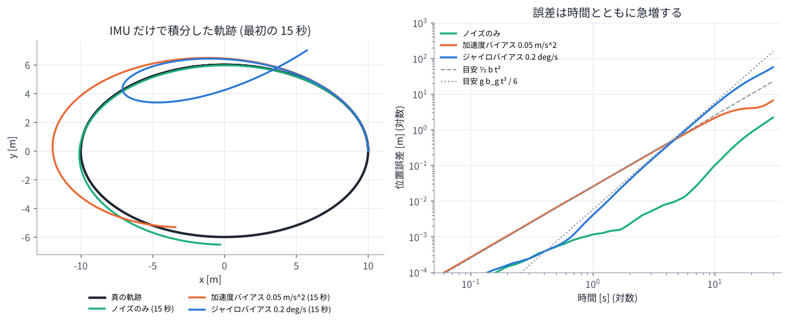
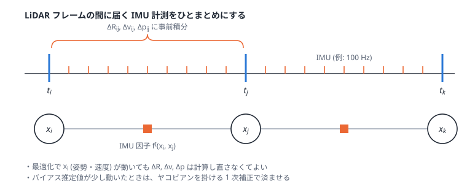

04. IMU と事前積分 (preintegration)
この章のゴール
- IMU が何を測っているか (角速度と「比力」) を式で書ける
- バイアスとノイズがあると、IMU だけの積分はすぐにずれていく (ドリフトする) ことが分かる
- IMU 事前積分 \(\Delta\mathbf{R}, \Delta\mathbf{v}, \Delta\mathbf{p}\) とは何か、なぜ効率的なのかを説明できる
- IMU 因子 \(f^I(\mathbf{x}_{i-1}, \mathbf{x}_i)\) の誤差の形が分かる
論文とのつながり 論文の \(f^I(\mathbf{x}_{i-1}, \mathbf{x}_i)\) は Forster らの IMU 事前積分 [Forster+ RSS2015] に基づく因子です。 論文本文では「線形化のたびに再積分する必要がないため誤差計算が効率的」と説明されています。 この章では、その「再積分しなくてよい」理由を理解します。
1. IMU が測るもの
IMU (Inertial Measurement Unit, 慣性計測装置) は主に 2 種類のセンサを持ちます。
- ジャイロスコープ: センサ座標系での角速度 \(\boldsymbol{\omega}\) [rad/s]
- 加速度計: センサ座標系での 比力 (specific force) [m/s²]
注意が必要なのは加速度計で、測っているのは「加速度」ではなく 加速度から重力加速度を引いたもの です。
- \(\mathbf{g} = (0, 0, -9.81)\) (z 軸上向きの世界座標)
- \(\mathbf{b}^{\omega}, \mathbf{b}^{a}\): バイアス (ゆっくり変化するオフセット)
- \(\boldsymbol{\eta}^{\omega}, \boldsymbol{\eta}^{a}\): ホワイトノイズ
止まっている IMU の加速度計は、重力に逆らって支えられている分の 上向き +9.81 m/s² を出力します。 「止まっているのに 9.81 が出る」のは故障ではありません。GLIM の設定の説明にも、 「IMU を静止させて z 軸を上に向けたとき、加速度が +9.81 付近になるか確認する」とあります。
実用上の注意: Livox などの内蔵 IMU は加速度を [g] 単位で出すことがあり、その場合は 9.80665 倍が必要です (GLIM の
acc_scale)。また LiDAR と IMU の相対姿勢 (外部パラメータT_lidar_imu) と時刻同期が ずれていると、どんな手法でも精度が出ません。
2. IMU だけで積分すると (デッドレコニング)
IMU の値を積分すれば姿勢・速度・位置が求まります。時間刻み \(\Delta t\) で離散化すると:
しかし、加速度は 2 回積分して位置になるので、少しの誤差でも急速に膨らみます。
- 加速度バイアス \(b\) が残っていると、位置誤差はおよそ \(\frac{1}{2} b t^2\)
- ジャイロバイアス \(b_g\) が残っていると、傾きの誤差 \(b_g t\) のせいで重力 \(g\) が横向きに漏れ込み、 位置誤差はおよそ \(\frac{1}{6} g\, b_g\, t^3\)

演習 5 では、0.2 deg/s という小さなジャイロバイアスでも、10 秒で約 5 m ずれることが分かります。
それでも IMU が役に立つ理由
IMU は 短い時間 なら非常に正確で、しかも 100〜1000 Hz と高頻度です。
- LiDAR フレーム間 (0.1 秒) の動きの予測 → スキャンマッチングの良い初期値 (02 章)
- 1 スキャン中の動きによる点群の歪みの補正 (deskew)
- 長い廊下など、点群だけでは決まらない方向 (退化) を補う
- 激しい動きでも追従できる
逆に、ゆっくり溜まるドリフトは LiDAR (と地図) で抑えます。お互いの弱点を補い合うのが LiDAR-IMU 融合です。 そのために、バイアスも状態に含めて一緒に推定します。
3. 素朴な方法の問題: 状態が変わるたびに積分し直し
最適化では、\(\mathbf{x}_i\) の推定値が反復のたびに変わります。上の積分式は始点の \(\mathbf{R}_i, \mathbf{v}_i, \mathbf{p}_i\) から 出発するので、素朴にやると \(\mathbf{x}_i\) が変わるたびに、区間内の数十〜数百個の IMU 計測を積分し直す ことになります。 ウィンドウ内に数十フレームあり、毎回数回反復するとなると、これはかなりの無駄です。
4. 事前積分: 始点に依存しない量だけを先に積分しておく
積分式を変形して、始点の状態に依存しない部分だけを先にまとめておくのが事前積分です。 区間 \([t_i, t_j]\) について、
と定義します。これらは IMU の計測値とバイアスだけ で決まり、\(\mathbf{R}_i, \mathbf{v}_i, \mathbf{p}_i\) を含みません。 すると、終点の状態は始点の状態から次のように「一発で」予測できます (\(\Delta t_{ij} = t_j - t_i\))。

IMU 因子の誤差
IMU 因子 \(f^I(\mathbf{x}_i, \mathbf{x}_j)\) は、「推定値どうしから計算した相対運動」と「事前積分値」のずれです。
この 9 次元の誤差を、事前積分の間に伝播させたノイズの共分散で重み付けした 2 乗誤差が \(f^I\) です。 最適化中に \(\mathbf{x}_i, \mathbf{x}_j\) が変わっても、変わるのはこの式の中の \(\mathbf{R}_i, \mathbf{v}_i, \ldots\) だけで、 \(\Delta\mathbf{R}_{ij}, \Delta\mathbf{v}_{ij}, \Delta\mathbf{p}_{ij}\) はそのまま使えます。
バイアスが変わったら? → 1 次補正
事前積分値はバイアス \(\mathbf{b}_i\) に依存します。最適化でバイアスの推定値が \(\delta\mathbf{b}\) だけ変わったら、 本当は積分し直しが必要ですが、変化が小さければ ヤコビアンを使った 1 次近似 で済ませます。
(\(\Delta\mathbf{R}, \Delta\mathbf{p}\) も同様。ヤコビアンは事前積分と同時に漸化式で計算しておけます) 演習 5 では、この 1 次補正が積分し直しとほぼ一致することを確かめます。
バイアスの変化のモデル
バイアスは「ゆっくりランダムに変化する」(ランダムウォーク) とモデル化し、隣り合う状態のバイアスをつなぐ因子
\(\lVert\mathbf{b}_j - \mathbf{b}_i\rVert^2_{\boldsymbol{\Sigma}_b}\) も入れます。
GLIM のコードでは BetweenFactor<imuBias::ConstantBias> として IMU 因子と一緒に追加されています。
5. GTSAM での IMU 因子
GTSAM には事前積分と IMU 因子が実装されています。Python 版ではおおよそ次のように使います
(発展演習 exercises/optional/opt_gtsam_imu_isam2.py)。
params = gtsam.PreintegrationParams.MakeSharedU(9.81) # z 上向き, 重力 9.81
pim = gtsam.PreintegratedImuMeasurements(params, bias)
for acc, gyro in imu_between_frames:
pim.integrateMeasurement(acc, gyro, dt) # 事前積分
graph.add(gtsam.ImuFactor(X(i), V(i), X(j), V(j), B(i), pim)) # IMU 因子
GLIM のコードでも同じ gtsam::ImuFactor が使われています (09 章)。
6. 初期化: 重力の向きを知る
IMU の積分を始めるには、最初の姿勢 (特に重力に対する傾き) と速度・バイアスの初期値が必要です。
静止していれば加速度計の向きが重力の向きになりますが、動きながら始める場合は工夫が要ります。
GLIM には initialization_mode として、数秒間のデータから頑健に推定する方式などが用意されています。
自己位置推定 (論文) では、さらに 地図上の初期位置 も必要です (07 章)。
演習 5
python exercises/ex05_imu.py
- IMU だけの積分で、ノイズ・加速度バイアス・ジャイロバイアスがどれだけドリフトを生むか
- 事前積分値を再利用すると、始点の状態を変えても積分し直しと完全に一致すること
- バイアスが変わったときの 1 次補正の精度
理解度チェック
- 静止した IMU の加速度計が 0 ではなく約 9.81 m/s² を出力するのはなぜ?
- ジャイロバイアスによる位置誤差が時間の 3 乗で増えるのはなぜ?
- 事前積分 \(\Delta\mathbf{R}_{ij}, \Delta\mathbf{v}_{ij}, \Delta\mathbf{p}_{ij}\) が始点の状態に依存しないことで、何がうれしい?
- バイアスを状態に含めて推定する理由は?
答えの例
- 加速度計は「加速度 − 重力加速度」(比力) を測る。静止時は加速度 0 なので、−g = 上向き 9.81 が出る。
- バイアスで姿勢の傾き誤差が \(b_g t\) と時間に比例して増え、それによって重力 \(g\) の一部 (\(g\,b_g t\)) が水平方向の加速度誤差になる。これを 2 回積分すると \(t^3\) に比例する。
- 最適化で状態が何度変わっても、IMU 計測の積分をやり直さずに済む (残差の計算が速い)。
- バイアスは機体・温度・時間で変わり事前に正確には分からないが、残っていると積分誤差が急増する。LiDAR の情報と一緒に推定すれば、オンラインで補正できる。
もっと知りたい人へ
- C. Forster, L. Carlone, F. Dellaert, D. Scaramuzza, "IMU Preintegration on Manifold for Efficient Visual-Inertial Maximum-a-Posteriori Estimation," RSS 2015. (同タイトルの拡張版が IEEE T-RO 2017)
- T. Lupton, S. Sukkarieh, "Visual-Inertial-Aided Navigation for High-Dynamic Motion in Built Environments Without Initial Conditions," IEEE T-RO 2012. (事前積分の元祖)